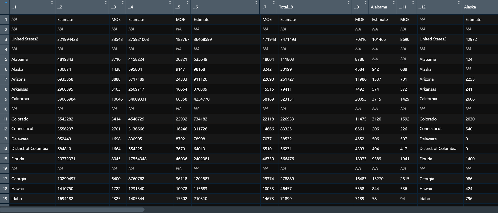
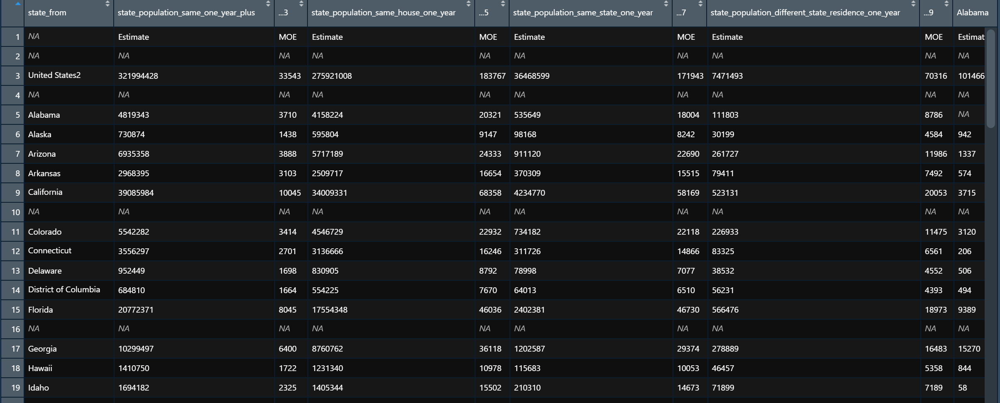
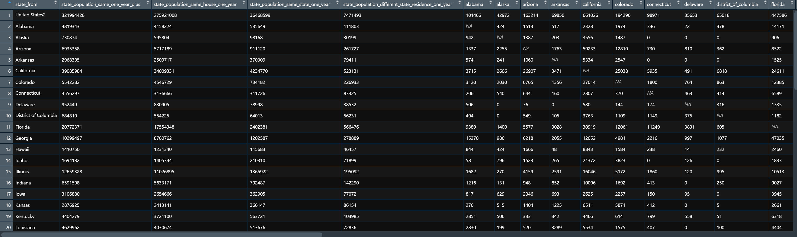
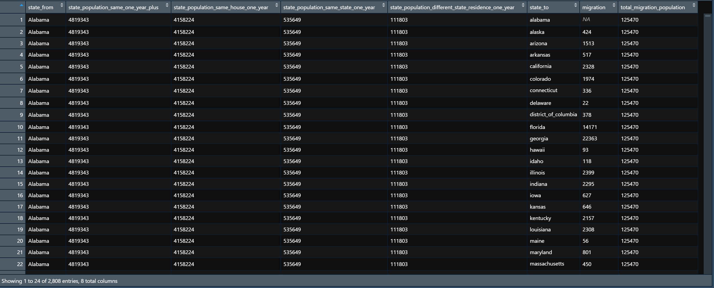
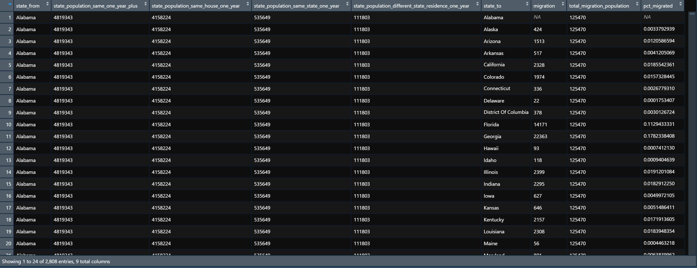
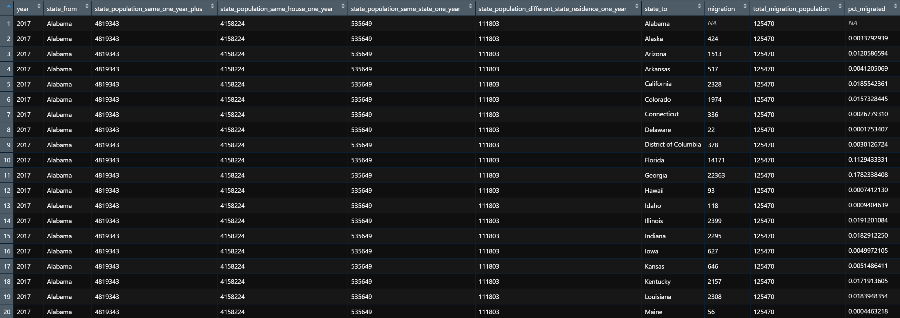

library(tidyverse)
library(lubridate)
library(readxl)
library(janitor)
library(tidytext)
theme_set(theme_bw())I recently ran across the U.S. Census Bureau page for state-to-state migration flows. There’s a lot of interesting analyses that can be done with a dataset like this. Unfortunately, when I opened up the .xls file, I realized that the data is not formatted in a way that makes it easy to analyze.

The data is extremely wide and contains a header, merged cells, multiple layers of column names, duplicate rows, and a footer. I assume there is a good reason for this format, but it does not make it easy for analysts to use.
The readxl package makes working with Excel files and the attendant formatting issues very easy. It supports the legacy .xls format and has many useful functions that help you transform Excel sheets designed for presentation into data that is ready for analysis. The goal is to have from_state (where the migration flowed from), columns for summary statistics about the from_state, to_state (where the migration flowed to), and migration_amount (how many people migrated).
The first step is to read in the data with read_xls. I opened the .xls file to find the range that contained the data, and set Excel’s “N/A” value to be NA.
df <- read_xls("post_data/State_to_State_Migrations_Table_2017.xls", range = "A7:DZ78", na = "N/A")
The column headers are clearly malformed and there are rows of useless or blank values. The data is wide, and each from_state has its own column for Estimate and MOE (Margin of Error). For my purposes, I only want to keep the Estimate data for each from_state.
Next, I identify the colums that contain the summary statistics I want to preserve. I identify the columns with their numeric index since the column names are mangled.
df <- df %>%
rename(state_from = 1,
state_population_same_one_year_plus = 2,
state_population_same_house_one_year = 4,
state_population_same_state_one_year = 6,
state_population_different_state_residence_one_year = 8)
Next, I drop the columns that contain the MOEs and other duplicate columns. read_xls did a good job identifying those automatically, so I can just search for "..", the string that the function uses to name columns it didn’t find a name for.
df <- df %>%
select(-contains("..")) %>%
clean_names() %>%
filter_all(any_vars(!str_detect(., "Estimate"))) %>%
filter(!str_detect(state_from, "residence"))
This is much closer to a dataset that can be used for analysis. The remaining steps are pretty standard data munging activities. I turn the relevant columns from character to numeric type, filter out data I don’t need, and pivot the data from wide to long. I aso compute the total migration population by state.
df <- df %>%
mutate_at(vars(2:ncol(df)), as.numeric) %>%
filter(!str_detect(state_from, "United States")) %>%
pivot_longer(cols = 6:ncol(df), names_to = "state_to", values_to = "migration") %>%
group_by(state_from) %>%
mutate(total_migration_population = sum(migration, na.rm = TRUE)) %>%
ungroup() 
Finally, I calculate what % of a from_state’s total outward migration goes to each to_state and clean up the to_state names.
df <- df %>%
mutate(pct_migrated = migration / total_migration_population,
state_to = str_replace_all(state_to, "_", " "),
state_to = str_to_title(state_to),
state_to = str_remove_all(state_to, "[[:digit:]]"))This is the final dataset: 
I turned the above steps into a function called clean_census_migration_data. This lets me read in and clean the data in one line.
clean_census_migration_data <- function(data){
message(str_c("Reading in:", data, sep = " "))
df <- suppressMessages(read_xls(data, range = "A7:DZ78", na = "N/A")) %>%
rename(state_from = 1,
state_population_same_one_year_plus = 2,
state_population_same_house_one_year = 4,
state_population_same_state_one_year = 6,
state_population_different_state_residence_one_year = 8) %>%
select(-contains("..")) %>%
clean_names() %>%
filter_all(any_vars(!str_detect(., "Estimate"))) %>%
filter(!str_detect(state_from, "residence"))
message(str_c("Rows:", nrow(df), sep = " "))
message(str_c("Columns:", ncol(df), sep = " "))
df <- df %>%
mutate_at(vars(2:ncol(df)), as.numeric) %>%
filter(!str_detect(state_from, "United States")) %>%
pivot_longer(cols = 6:ncol(df), names_to = "state_to", values_to = "migration") %>%
group_by(state_from) %>%
mutate(total_migration_population = sum(migration, na.rm = TRUE)) %>%
ungroup() %>%
mutate(pct_migrated = migration / total_migration_population,
state_to = str_replace_all(state_to, "_", " "),
state_to = str_to_title(state_to),
state_to = str_remove_all(state_to, "[[:digit:]]"),
state_to = str_replace(state_to, " Of ", " of "))
return(df)
}Since the Census Bureau provides a file for each year, I can map clean_census_migration_data to multiple files in a list and combine them. This allows me to compare the data longitudinally.
migration_files <- list.files("post_data", full.names = TRUE) %>%
keep(str_detect(., ".xls$"))
migration_files[1] "post_data/state_to_state_migrations_table_2010.xls"
[2] "post_data/state_to_state_migrations_table_2011.xls"
[3] "post_data/state_to_state_migrations_table_2012.xls"
[4] "post_data/state_to_state_migrations_table_2013.xls"
[5] "post_data/State_to_State_Migrations_Table_2014.xls"
[6] "post_data/State_to_State_Migrations_Table_2015.xls"
[7] "post_data/State_to_State_Migrations_Table_2016.xls"
[8] "post_data/State_to_State_Migrations_Table_2017.xls"
[9] "post_data/State_to_State_Migrations_Table_2018.xls"df_migration <- migration_files %>%
set_names() %>%
map_dfr(clean_census_migration_data, .id = "file_name") %>%
mutate(year = str_extract(file_name, "[[:digit:]]{4}") %>% as.numeric) %>%
select(year, everything(), -file_name)Reading in: post_data/state_to_state_migrations_table_2010.xlsRows: 53Columns: 59Reading in: post_data/state_to_state_migrations_table_2011.xlsRows: 53Columns: 59Reading in: post_data/state_to_state_migrations_table_2012.xlsRows: 53Columns: 59Reading in: post_data/state_to_state_migrations_table_2013.xlsRows: 53Columns: 59Reading in: post_data/State_to_State_Migrations_Table_2014.xlsRows: 53Columns: 59Reading in: post_data/State_to_State_Migrations_Table_2015.xlsRows: 53Columns: 59Reading in: post_data/State_to_State_Migrations_Table_2016.xlsRows: 53Columns: 59Reading in: post_data/State_to_State_Migrations_Table_2017.xlsRows: 53Columns: 59Reading in: post_data/State_to_State_Migrations_Table_2018.xlsRows: 53Columns: 59
Note: the above function will not work with the 2009 migration file because the Census Bureau did not include summary statistics about the from_state for that year. You can read in the 2009 file separately with a modified clean_census_migration_data function and join that back to the rest of the data.